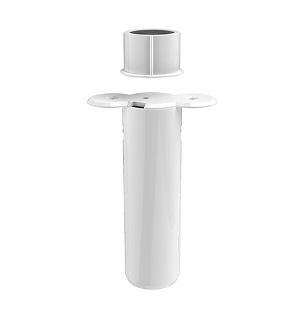
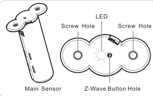

Aeon Labs Recessed Sensor¶
Aeon Labs Recessed Door Sensor Gen5¶

Specification¶
- Aeon Labs Recessed Door Sensor Gen5 is a door detector that can detect the state of the door’s open/close. It is a notification sensor device based on Z-wave routing slave library V6.51.01
- Up to 100 feeds/30 metres indoor and 300 feeds/100 metres outdoor
- Battery lithium CR2, 3V, 800 mAh
- Work in -10 ~ 60 celcius, 8 ~ 80% huminity
Inclusion/Exclusion to/from a network¶

- Put controller into inclusion/exclusion mode
- Press the z-wave button which is hiden under the hole on top of device once. Device will be included/excluded to/from zwave network.
Button actions¶
- Short press z-wave button:
Add/Remove device to/from a z-wave network
- Press and hold z-wave button for 6 seconds
1, It will be wake up and send Wake Up Notification with broadcast. 2, It will sleep after you released the z-wave button for 10 seconds, or sleep right away when received the Wake Up No More Information and then the led will turn off.
- Press and hold the Z-wave Button for 20 seconds
Recessed Door Sensor will be reset and send Device Reset Locally CC to controller. Note: This procedure should only be used when the primary controller is inoperable or missing.
Wake up information¶
Recessed Door Sensor will keep wake up for 10 seconds after it send wake up notification command. If it’s included into Z-wave network, the Recessed Door Sensor will wake for 10 minutes.
- Only 2 ways can abort this status:
- Z-wave Button held 6 seconds, then released, after 8 seconds, sleep right now;
- Recessed Door Sensor received “Wake up no more information CC”, sleep immediately;
Configuration description¶
- Parameter 1: Which value of the Sensor Binary Report will be sent when the magnet switch to open/close.
Parameter: 1 (0x01)
Size: 1 byte
- Value:
- Value=0, Open=Sensor Binary Report 0xFF, Close=Sensor Binary Report 0x00.
- Value=1, Open= Sensor Binary Report 0x00, Close=Sensor Binary Report 0xFF.
Default: 0
- Parameter 3: Which value of the Basic Set will be sent when the magnet switch to open/close.
Parameter: 3 (0x03)
Size: 1 byte
- Value:
- Value=0, Open= Basic Set 0xFF, Close=Basic Set 0x00.
- Value=1, Basic Set 0x00, Close= Basic Set 0xFF.
Default: 0
- Parameter 101: Enable/disable the function of low battery checking, when the current voltage is less than the warning voltage, it will send the Battery Low Warning Report
Parameter: 101 (0x65)
Size: 1 byte
- Value:
- 00 = Disable
- 01 = Enable
Default: 0
- Parameter 111: Low battery checking interval
- Parameter 111 (0x6F)
- Size: 4 bytes
- Value: 0 ~ 0x7fffffff in seconds. Unit is 4 minutes.
- Default: 0x00015270 (24 hours)
- Note:
- This parameter only will be activated after the function of low battery checking (parameter 101) is enabled.
- Recessed Door Sensor also will check the current battery voltage when it was wake up as other ways such as zwave button trigger, magnet switch trigger...
- Parameter 121: Trigger report types
Parameter: 121 (0x79)
Size: 4 bytes
- Value: bit setting
- Bit 8: Basic set
- Bit 4: Binary report
Default: 0x00000100
- Parameter 252: Lock configuration setting
Parameter: 252 (0xFC)
Size: 1 byte
- Value:
- 0 = Unlock
- 1 = Lock
Default: 1